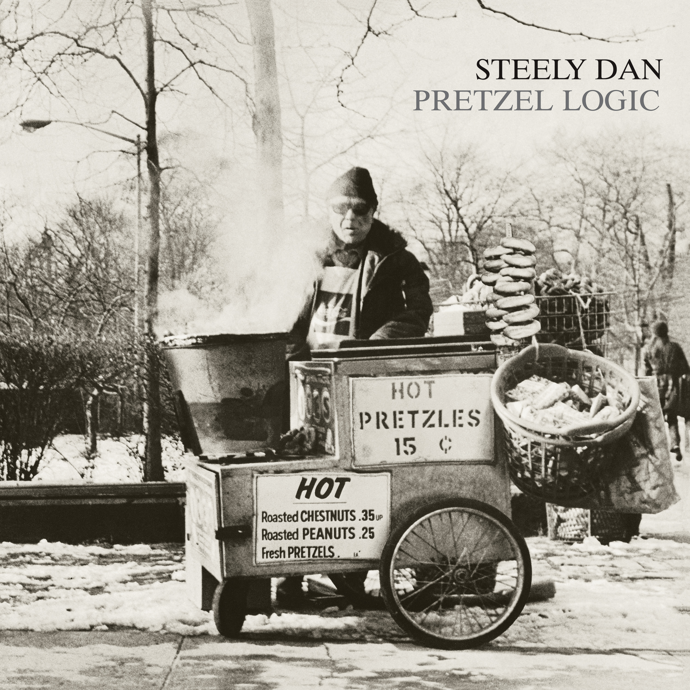
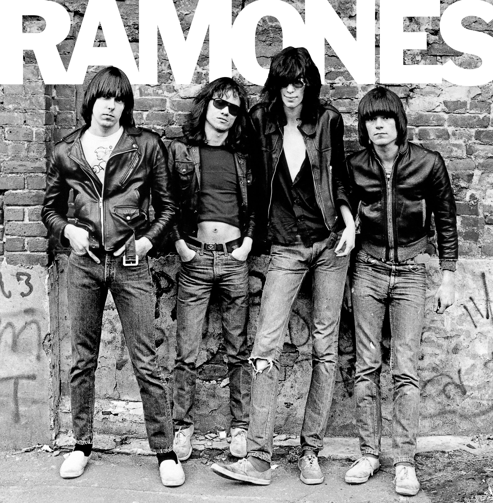
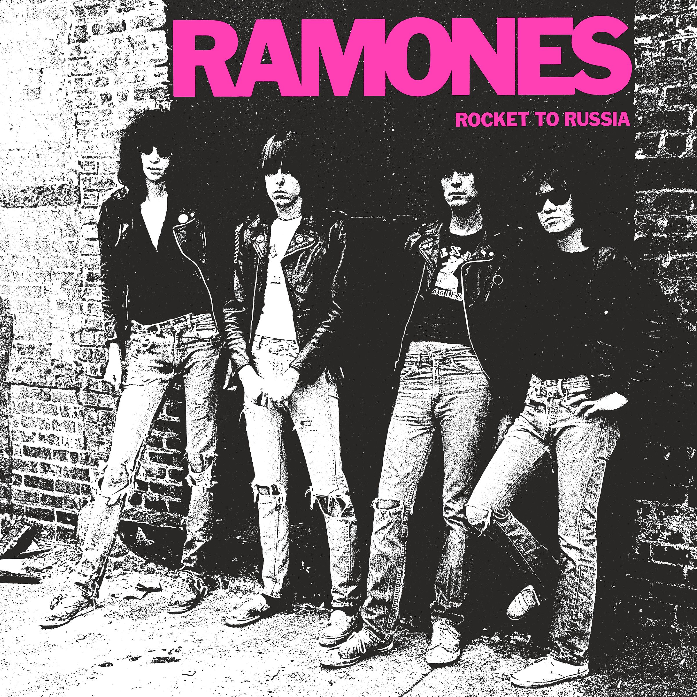
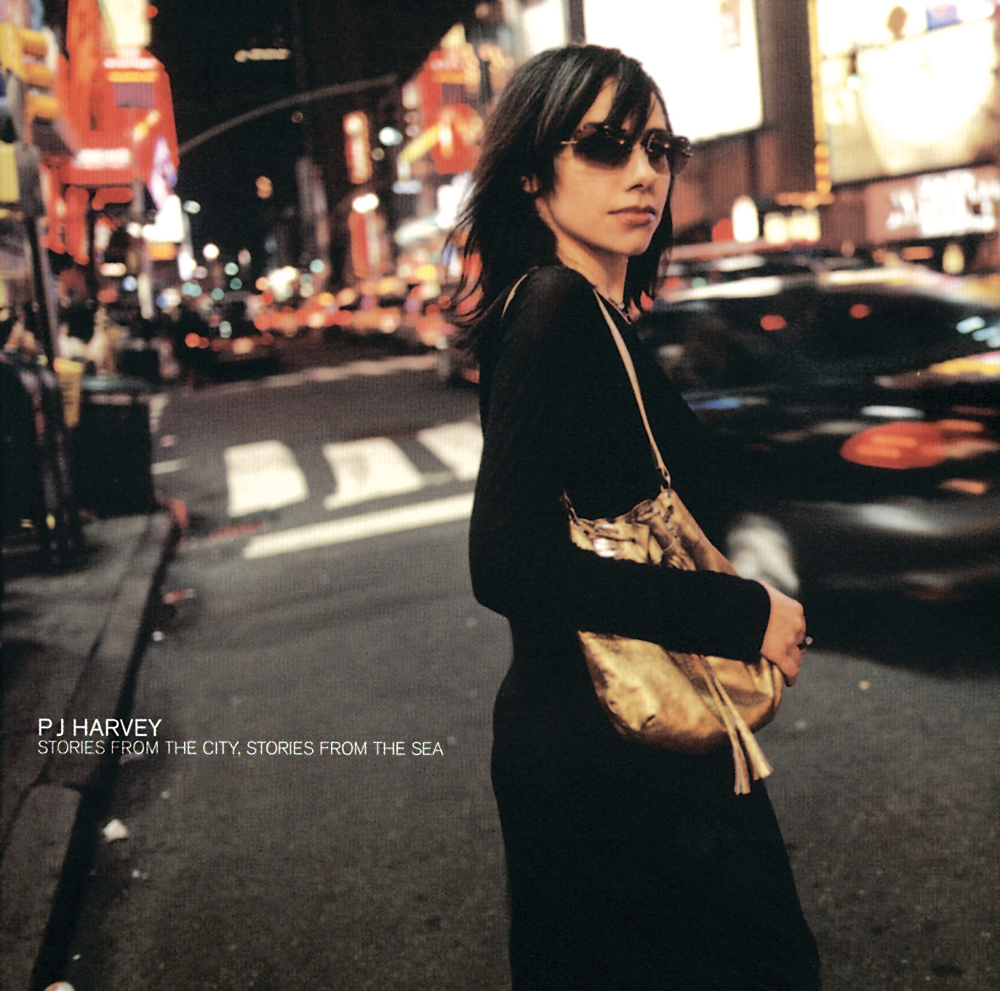
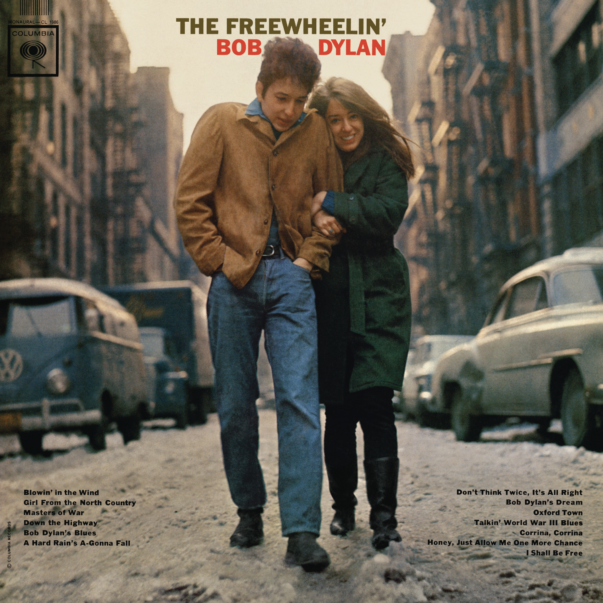
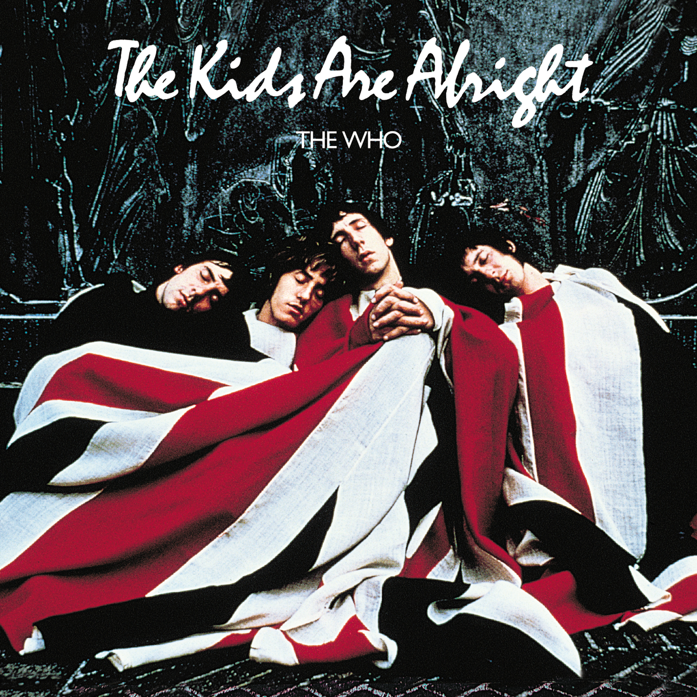

Album Cover NYC
Iconic album covers shot in New York City and their stories.
52nd Street (1978) | Billy Joel
Location: Manhattan alley near 52nd Street between 6th and 7th Avenues.
Billy Joel stands in a gritty Manhattan alley, saxophone in hand. The backdrop is a nod to the energy of Midtown’s 52nd Street, known for its jazz clubs. The photo was shot near the CBS Records building where Joel recorded the album.

Personal Response:
I didn’t listen to much of Billy Joel before, aside from a few well-known songs. In some ways, he reminds me of musicians like Elton John: piano-focused, middle-class themes, catchy rhythms, and memorable lyrics. I also visited the place on the album cover and took a picture, but it looked completely different. Time has changed.
My Life
After the Gold Rush (1970) | Neil Young
Location: Northwest corner of Sullivan Street and West 3rd Street, Greenwich Village.
Neil Young’s reflective album cover shows a blurred image of him passing by a brick building in Greenwich Village. The black-and-white photograph captures the neighborhood’s timeless character.

Personal Response:
After the Gold Rush has always been one of my favorite albums. It’s also the album that introduced me to Neil Young and accompanied me through one of my darkest times. The transitions in the album are seamless, with each song properly placed, and the mood shifts are smooth. Most importantly, Neil Young’s ability to express his delicate emotions through simple songs stands out. This is greatly exemplified by the solo in Down by the River form the album Everybody Knows This Is Nowhere
Luckily, I actually had the chance to attend Neil Young’s concert in New York State. To be honest, it wasn’t the best concert I have ever been to. He was more than half an hour late, and there wasn’t a single song from this album. What surprised me most was how much he seemed to have changed. It was fascinating to observe—he had almost turned into a ‘hard person’ with crazy stage movements at his age and an uplifting sound. I could no longer see the sad boy I had heard in his early albums, especially this one.
Don't Let It Bring You Down
An Innocent Man (1983) | Billy Joel
Location: 142 Mercer Street, SoHo.
Billy Joel sits on the steps of a classic cast-iron building in SoHo, evoking the doo-wop era’s street-corner nostalgia. The location’s vintage aesthetic perfectly matches the album’s homage to 1950s and ’60s music.

Personal Response:
I remember when I was young, I didn’t know what the lyrics were about. I just thought they sounded good and classic. Recently, after watching the music video, I started to understand the meaning behind the words and the context. I began to feel the intricate emotions. I can almost imagine myself as an ‘ordinary boy’ attracted to an upper-class, good-looking maiden. Despite the class gap, there’s this ‘strange’ confidence. I assume most people would regard this as daydreaming, so I can sense the impending tragedy. However, the song only tells the first half of the story, leaving the second half open-ended. That’s the magic of the song—it expands the storyline in a smart way and absorbs the listener into that scenario.
Uptown Girl
Breaking All the Rules (1981) | Peter Frampton
Location: 350 West 23rd Street, Chelsea.
Description: Peter Frampton is captured in a candid street scene in Chelsea, reflecting the album's raw and live-in-the-studio approach. The urban backdrop complements the album's rock aesthetic.

Personal Response:
I don’t have much to say about this one, honestly. Everyone knows Peter Frampton is famous for Frampton Comes Alive!, so I’ll talk about that instead. Luckily, I had the chance to attend his concert in Philadelphia this semester. It made me appreciate his live performance skills. It was the first time I felt like I was at a concert while listening through a streaming platform. When I listen to Frampton Comes Alive!, I can almost feel like I’m back at the concert (it’s great that Frampton’s sound hasn’t changed much). The only comparable experience would be virtual reality, but that’s for visuals—this is for sound.
Breaking All The Rules
Dressed to Kill (1975) | Kiss
Location: Southwest corner of 23rd Street and 8th Avenue, Chelsea.
Kiss, dressed in suits and their signature makeup, pose on a wet sidewalk in Chelsea. The juxtaposition of their theatrical look against the urban grit gives the cover a raw, streetwise feel.

Personal Response:
KISS is one of the most iconic bands in costume, often making new listeners assume they’re a hardcore metal band. But the reality is quite different. The last time I was tricked like this was with Marc Bolan’s Electric Warrior. I expected hard rock, but it turned out to be glam rock. In the case of KISS, they still have some of the best live performances and staging. As for their music, just look at the lyrics: “I wanna rock and roll all nite, and party every day,” which vividly exemplifies their core values—fun, carelessness, and the youthful rock ‘n’ roll spirit.
Rock And Roll All Nite
Electric Ladyland (1968) | The Jimi Hendrix Experience
Location: Alice in Wonderland statue, Central Park
The cover, originally intended by Jimi Hendrix, features The Jimi Hendrix Experience posing with children at the Alice in Wonderland statue in Central Park. Captured by Linda Eastman (later Linda McCartney), the whimsical scene reflects Hendrix’s playful side and the album’s expansive, psychedelic sound.

Personal Response:
Electric Ladyland is also one of my favorite albums. There’s no need to mention its historical significance as Jimi Hendrix’s best studio album. It gave us so many great singles. The second half of the album forms a well-structured story, accompanied by psychedelic music and Jimi’s masterful guitar playing. You get a glimpse of another side of the world, all the way back in 1968.
Still Raining, Still Dreaming
Pat Boone (1956) | Pat Boone
Location: Columbia University, Morningside Heights.
Pat Boone’s self-titled album cover features the singer standing confidently on the steps of Columbia University. The academic setting reflects Boone’s wholesome and clean-cut image of the 1950s.

Personal Response
I was surprised to learn the album cover was shot in Columbia. After class, I tried to replicate the exact angle of the photo. I don’t have much to say about the music itself (which is basically standard rock ‘n’ roll of that era), but I’m thrilled to be “part of history.” Walking through the places where these historic album covers were shot is a fresh experience for me.
Ain't That A Shame
Paul's Boutique (1989) | Beastie Boys
Location: Intersection of Rivington and Ludlow Streets, Lower East Side
This vibrant cover captures a corner store on Rivington Street. The gritty authenticity of the Lower East Side matches the Beastie Boys’ eclectic and boundary-pushing sound.

Personal Response
Beastie Boys are one of the strangest groups. You could say they’re in the middle ground between hip-hop and rock—or maybe not?
Shake Your Rump
Physical Graffiti (1975) | Led Zeppelin
Location: 96 and 98 St. Mark’s Place, East Village.
The cover features two classic tenement buildings in the East Village. Their symmetrical facades and fire escapes embody the raw, urban energy of Led Zeppelin’s double album.

Personal Response
I didn’t pay much attention to this album before. I still don’t enjoy the single Kashmir.
Trampled Under Foot
Pretzel Logic (1974) | Steely Dan
Location: Central Park entrance at 5th Avenue and 79th Street
The cover shows a pretzel vendor in front of a Central Park gate. This everyday New York scene captures the understated, enigmatic feel of Steely Dan’s music.
Personal Response
I would rank Pretzel Logic as my third favorite Steely Dan album. The first few songs flow together well. Beyond the beautiful melodies, the witty personal wisdom from Becker and Fagen stands out.
Any Major Dude Will Tell You
Ramones (1976) | Ramones
Location: 6 East 2nd Street, East Village.
The Ramones pose against a graffiti-covered brick wall. This gritty East Village location reflects the raw, rebellious spirit of punk rock’s pioneers.
Personal Response
Hey, ho, let’s go! (Not much else to say—it’s punk!)
Blitzkrieg Bop
Rocket to Russia (1977) | Ramones
Location: 6 East 2nd Street, East Village.
Shot at the same location as their debut album, this cover shows the Ramones embracing the same punk ethos, standing defiantly in front of the same brick wall.
Sheena Is a Punk Rocker
Stories from the City, Stories from the Sea (2000) | PJ Harvey
Location: Times Square.
The album cover depicts PJ Harvey crossing a neon-lit street in Times Square at night, embodying the vibrant energy of New York City. This imagery aligns with the album's themes, inspired by Harvey's affection for the city and her experiences there.
Personal Response
Once again, I had the chance to attend PJ Harvey’s live show at Terminal 5. My first impression was that she was a talented artist who balanced commercial success and artistry. She is one of the few female artists able to show rawness. I had only listened to Rid of Me before, but the live show—and this album—proved me wrong. She is excellent at expressing delicate, sentimental emotions. I almost cried at the beauty of her lyrics and voice. “On a rooftop in Brooklyn, at one in the morning, watching the lights flash…” Pure imaginative beauty for me.
You Said Something
Strange Days (1967) | The Doors
Location: Sniffen Court, 150-158 East 36th Street, Murray Hill.
The cover features circus performers in a secluded cobblestone alley. This surreal location in Murray Hill perfectly matches the album’s eerie, dreamlike quality.

People Are Strange
The Freewheelin’ Bob Dylan (1963) | Bob Dylan
Location: Jones Street and West 4th Street, Greenwich Village.
Bob Dylan and Suze Rotolo walk arm-in-arm down a snow-dusted street in Greenwich Village. The image captures the romance and defiant spirit of the folk music scene of the 1960s.
Blowin' in the Wind
The Kids Are Alright (1979) | The Who
Carl Schurz Monument, 116th Street and Morningside Drive, Morningside Heights.
The Who, wrapped in a Union Jack flag, lounge near the Carl Schurz Monument. This iconic image symbolizes the band’s blend of British heritage and rock rebellion.
Personal Response
This is actually a live album, and the first track’s live performance video was shown in class. I’ve included the video here as well.
Wednesday Morning, 3 A.M. (1964) | Simon & Garfunkel
Location: Fifth Avenue/53rd Street subway station.
Simon & Garfunkel stand on a subway platform, evoking the city’s late-night solitude. The image reflects the album’s contemplative, folk-driven atmosphere.

The Sound of Silence